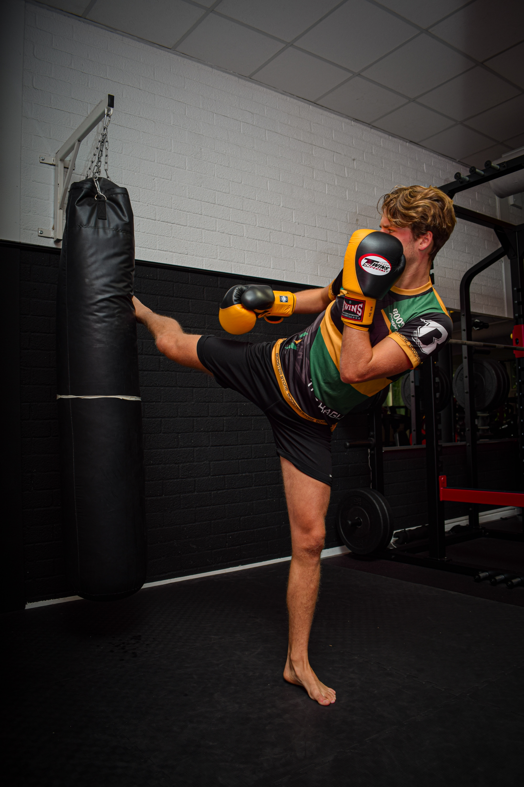

Joe Schmo Personal Training
Welcome to Joe Schmo's Fitness and Wellness World, where your journey to a healthier, stronger, and more vibrant you begins. At our personal training studio, we believe that every individual has the potential to achieve their fitness goals and unlock their inner strength. Whether you're looking to shed those extra pounds, build lean muscle, improve your overall health, or simply boost your confidence, we're here to guide and support you every step of the way. With a passion for fitness, a dedication to personalized training, and a commitment to helping you reach your full potential, we're excited to embark on this transformative journey together. Welcome to a world of fitness, where the extraordinary becomes the everyday.
What's Offered
Here at Joe Schmo personal training I look to do what's best for overall wellness. Most gyms and trainers will only provide weight training as their focus. My main goal is to expand that variety and get you to try different classes such as kickboxing, high intensity interval training, swimming, yoga and also weight training. Complimentery to all memberships is a free nutrition assessment. With these guided tools, there's no reason you shouldn't hit your goals!
Customer Reviews
"I can't say enough about my experience at Joe's. From the moment I walked through the doors, I felt welcomed and motivated. The trainers here are top-notch and incredibly knowledgeable. They take the time to understand your goals and tailor your workouts accordingly. Not only have I seen significant improvements in my strength and endurance, but I've also made some amazing friends in the process. The sense of community at Joe's is unlike any other gym I've been to. The facilities are clean, well-maintained, and equipped with everything you need for a great workout. I genuinely look forward to my gym sessions, and that's something I never thought I'd say! If you're looking for a gym that will inspire and challenge you, Joe Schmo's Personal Training is the place to be."
- Andrew T."I've been a loyal member of Joe Schmo's Personal Training for over a year now, and I couldn't be happier with my decision. This gym has truly transformed my life. The trainers and staff are not only friendly but also incredibly supportive. They've helped me set realistic fitness goals and provided the guidance I needed to achieve them. The variety of classes offered at Joe's is outstanding; I never get bored with my workouts. Plus, the state-of-the-art equipment and facilities make it easy to stay motivated. What sets this gym apart, though, is the sense of camaraderie among the members. I've made some incredible friends who keep me accountable and motivated. If you're on the fence about joining a gym, don't hesitate any longer. Joe's is more than just a gym; it's a community of like-minded individuals working towards their fitness goals together. I couldn't be more grateful for the positive impact it's had on my life."
- Frank V.